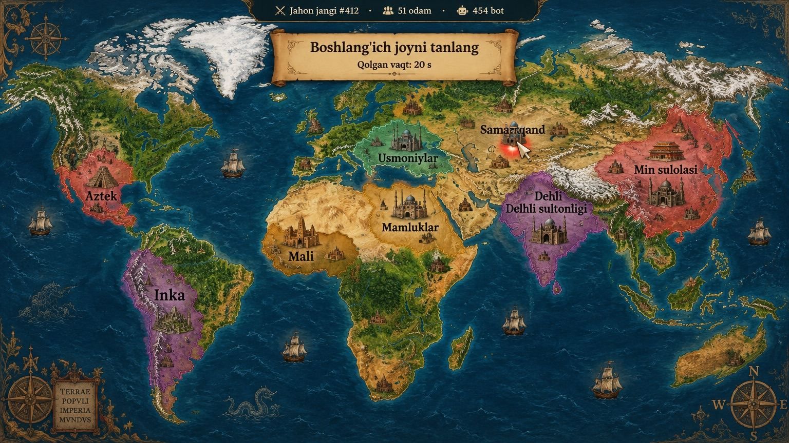

O'yin qanday ko'rinishi va qanday ishlashi: bo'yalgan tarixiy xarita, haqiqiy geografiya, mintaqaga bog'liq qo'shinlar, erkin nom va bayroq, hudud speaking/writing mashqlari bilan kengayadi, qo'shin daromadi kengayishga bog'liq. Rasmlar: Figma AI konseptlari, HUD: jonli HTML.

Konsept rasmlar Figma AI (gpt-image) bilan yaratilgan va yo'nalishni ko'rsatadi; yakuniy o'yin grafikasi rassom tomonidan shu uslubda ishlanadi.